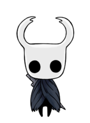

Hollow Knight

Caballero
Caballero es el personaje principal del juego y es el personaje que controlamos a lo largo de Hallownest. El caballero es una vasija nacida del Vacío y fue uno de las muchos recipientes hechos por el Rey Pálido para contener a el Destello. Es proveniente de Hollow Knight
La salud del caballero se mide por algo llamado máscaras, las cuales se pueden obtener pedazos a lo largo del mapa, son necesarios 4 Fragmentos de Máscara para completar una Máscara Antigua, las cuales aumentan la salud de el Caballero por uno.
El ALMA es el término que se utiliza en el juego para la energía de color blanco extraído y proveniente de los enemigos y totems de alma, el Alma de utiliza para lanzar Hechizos que infligen daño o usar la Concentración para curar al caballero una máscara por concentración, también se puede acelerar o duplicar el proceso de la concentración con los Amuletos: Concentración rápida y Concentración profunda, cada uno cumpliendo una función. También existen los Fragmentos de vasija. 3 Fragmentos son necesarios para crear una Vasija de Alma, las cuales funcionan como pequeños recipientes de alma extra.
Prueba nuestro juego y siguenos en nuestras redes sociales: